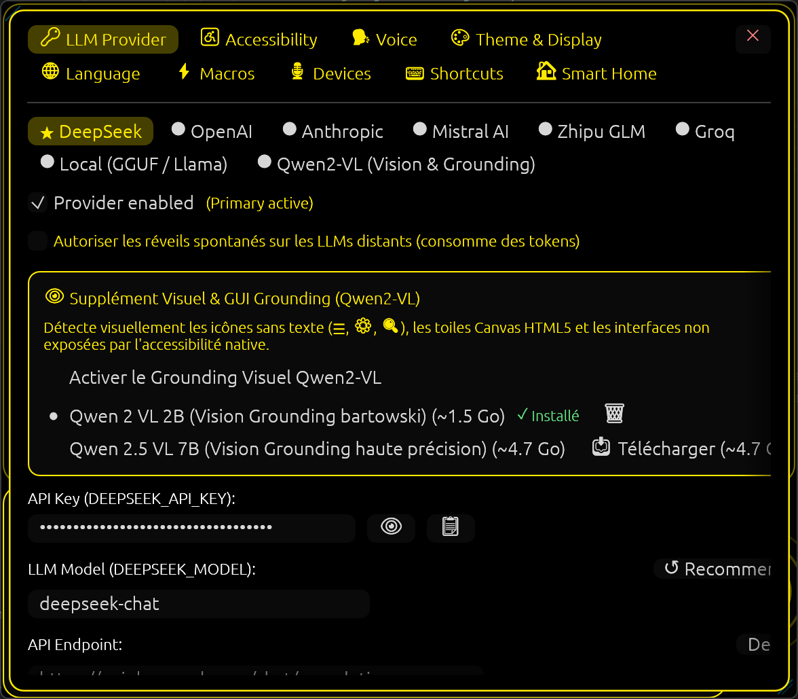
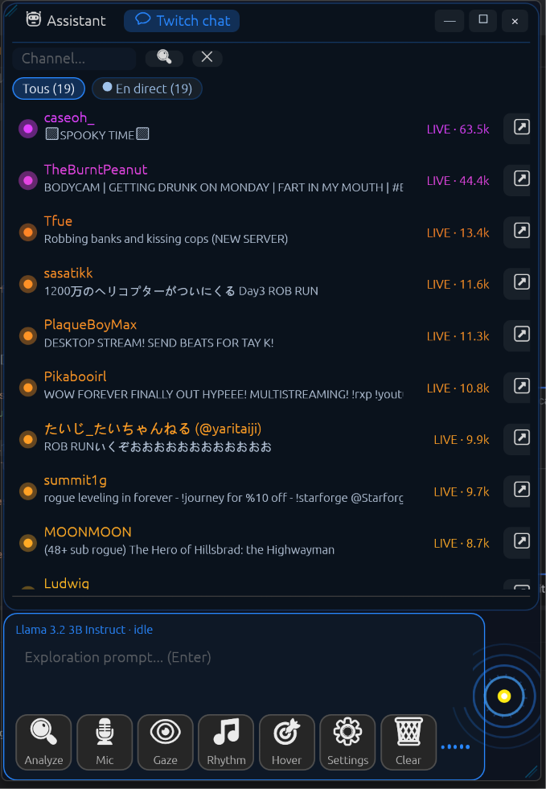

Aperçu de Libertide en action
Découvrez l'interface accessible et ses différents modules en situation réelle.





Dictée Vocale 100% Locale (Whisper)
Dictez vos textes, courriels et documents sans latence. Aucune donnée vocale ou médicale ne transite par le cloud.
LLM Locaux & IA Multimodale
Analyse d'écran visuelle, résumé et assistance contextuelle propulsés par des modèles multimodaux (VLM) s'exécutant 100% en local, sans cloud.
Clavier Virtuel & Tableau CAA
Saisie assistée avec auto-balayage, prédiction de mots contextuelle et communication alternative par pictogrammes ARASAAC.
Ciblage Anti-Tremblement & Badges
Des badges dorés numérotés se superposent sur chaque contrôle. Dites "clique 3" ou tapez le chiffre pour valider sans effort de précision millimétrique.
Domotique & Chambre Médicale
Ajustez l'inclinaison de votre lit médicalisé, les lumières et les volets par la voix ou le regard via Home Assistant, KNXnet/IP (UDP direct) et BACnet/IP.
Contacteur Unique & Passerelle Mobile
Parcours par balayage hiérarchique (Fenêtre ➔ Zone ➔ Bouton). Transformez n'importe quel smartphone, tablette ou carte ESP32 en contacteur sans fil avec retour haptique.
Eye-Tracking IA & Matériel
Contrôlez le pointeur avec votre simple webcam via notre réseau neuronal local (L2CS-Net ONNX), ou connectez vos eye-trackers dédiés (Tobii, GazePoint GP3) en OpenGaze et OpenTrack.
Exemples de Commandes Vocales & Intentions
Parlez naturellement. Le routeur sémantique local de Libertide comprend vos intentions, élimine les hésitations et pilote votre ordinateur pas à pas.
Minuteurs, Rappels & Cronjobs
Temporel & DifféréProgrammez des actions futures ou des alertes médicales précises sans quitter votre activité.
- « Dans 5 minutes, rappelle-moi d'éteindre le four »
- « Rappelle-moi de prendre mes médicaments dans 1 heure »
- « Minuteur de 12 minutes pour le thé »
- « Toutes les 30 minutes, rappelle-moi de m'hydrater »
- « Annule tous les minuteurs actifs »
Radios en Direct, Vidéos & Audio
Flux & MédiaAccédez directement aux directs et vidéos sans vous perdre dans les bannières cookies.
- « Mets France Inter en direct » ou « Mets une station de radio »
- « Lance une vidéo relaxante sur YouTube »
- « Mets le son » ou « Baisse le volume d'un cran »
- « Silence » ou « Mute » (coupe les sons externes tout en conservant la voix de Libertide)
- « Ouvre la boîte à rythme » (instrument musical adapté)
Navigation Web & Lecture Intelligente
Exploration WebRecherche Google, validation automatique des cookies et extraction synthétique du contenu.
- « Quelle est la météo à Lyon aujourd'hui ? »
- « Trouve un billet de train pour Marseille »
- « De quoi parle cet article ? Fais-moi un résumé »
- « Accepte les cookies et descends dans la page »
- « Page précédente » ou « Ferme cet onglet »
Chambre Médicalisée & Domotique Locale
KNX / BACnet / HASSContrôle direct de l'environnement physique et activation de macro-scénarios en 1 geste oral.
- « Mode sommeil » (lit à plat, volets fermés, lumières éteintes, PC verrouillé)
- « Mode repas / travail » (tête du lit relevée, éclairage de travail, fenêtre centrée)
- « Allume la lumière de la chambre »
- « Ouvre les volets à moitié »
- « Règle le chauffage sur 21 degrés »
Vision Multimodale & Lecture de Documents
VLM 100% LocalCompréhension spatiale, détection d'icônes, lecture de graphiques et formulaires administratifs.
- « Que vois-tu à l'écran ? »
- « Décris l'image jointe avec des repères spatiaux »
- « Lis cette attestation de droits CPAM / France Travail en PDF »
- « Qu'y a-t-il d'écrit sur ce schéma ou ce graphique ? »
- « Lis le texte manuscrit ou le captcha affiché »
Pilotage Numéroté, Dictée & Contacteur
Zéro Précision RequiseContrôle total au contacteur unique, à la voix ou avec des tremblements sévères.
- « Clique 4 » ou « Clique sur Connexion »
- « Mode contacteur » ou « Mode survol »
- « Active la dictée vocale » ➔ « À la ligne », « Efface le mot »
- « Ouvre le clavier virtuel » ou « Affiche la grille CAA »
- « Focus sur le Bloc-notes et écris bonjour »
Twitch Chat & Espace de Travail
Social & FenêtresSuivi du chat vocal Twitch en direct et organisation ergonomique des fenêtres d'écran.
- « Ouvre le chat de ZeratoR sur Twitch » (lecture TTS en direct)
- « Rejoins le live de Kamet0 »
- « Mets cette fenêtre à gauche et le navigateur à droite »
- « Plein écran » ou « Affiche la fenêtre Discord »
- « Annule » (reviens en arrière sur la dernière action)
Compagnon Présent & Réconfort
Écoute ActiveUn assistant vivant, lucide, chaleureux et respectueux qui ne vous laisse jamais seul.
- « Tu m'entends ? » ➔ Réponse chaleureuse immédiate
- « Je me sens un peu fatigué aujourd'hui »
- « Raconte-moi une anecdote étonnante sur l'espace »
- « Change de voix » ou « Active la voix clonée »
- « Active le contraste élevé » ou « Grossis le texte »
Votre avis nous intéresse
Aidez-nous à faire évoluer Libertide en partageant vos retours, suggestions d'amélioration ou témoignages.